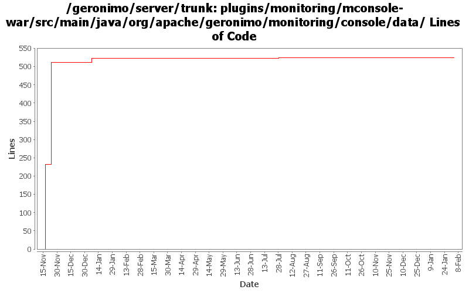

[root]/plugins/monitoring/mconsole-war/src/main/java/org/apache/geronimo/monitoring/console/data

| Author | Changes | Lines of Code | Lines per Change |
|---|---|---|---|
| Totals | 8 (100.0%) | 563 (100.0%) | 70.3 |
| djencks | 4 (50.0%) | 545 (96.8%) | 136.2 |
| dwoods | 2 (25.0%) | 15 (2.7%) | 7.5 |
| xuhaihong | 2 (25.0%) | 3 (0.5%) | 1.5 |
GERONIMO-5057 Use those xmlbeans generated by JAVA EE 6 schema files
1 lines of code changed in 1 file:
GERONIMO-4732 click monitoring and delete the server localhost and there is an Error rendering portlet.(Patch from Rex Wang)
2 lines of code changed in 1 file:
GERONIMO-4487 Can't disable/enable a server in monitoring portlet. Thanks to Shawn Jiang for the patch.
15 lines of code changed in 2 files:
GERONIMO-4415 use jpa for data access in monitoring console
313 lines of code changed in 3 files:
GERONIMO-4415 start of code cleanup and use of jpa in console. Also add a server assembly for testing
232 lines of code changed in 1 file: